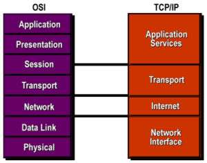
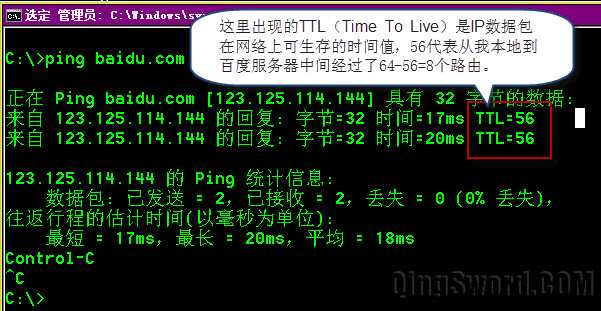
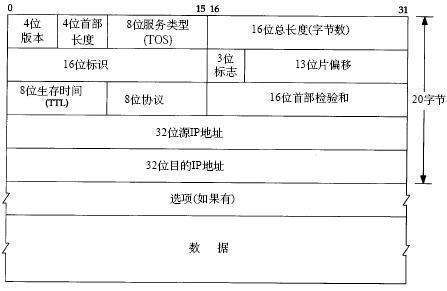
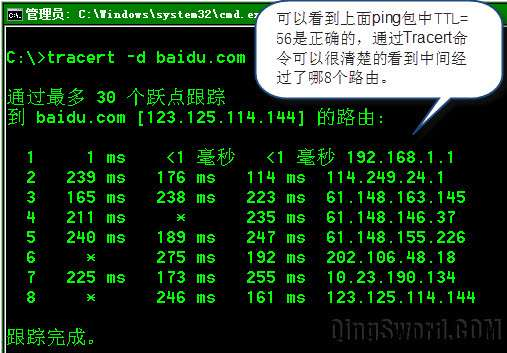
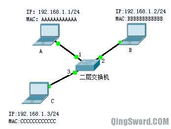
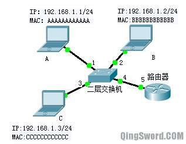
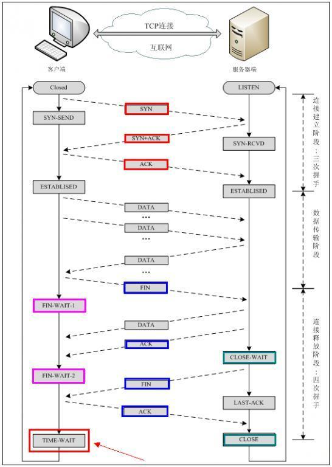
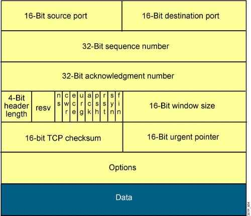
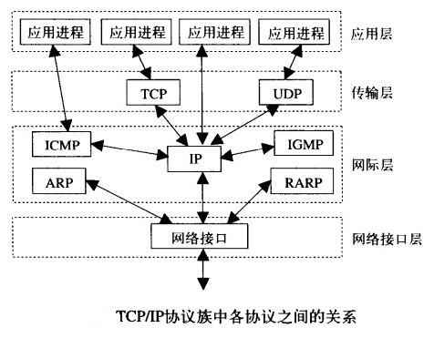

[CCNA图文笔记]-3-TCP/IP参考模型和协议的对应关系
引言
这篇文章给大家介绍TCP/IP参考模型，列举在这个参考模型下常见的协议，重点描述ARP协议和TCP协议的工作原理。
文章目录
- 0×1.TCP/IP参考模型和OSI参考模型的对应关系
- a.网络访问层（NetworkAccess）
- b.网际层（Internet）
- c.传输层（Transport）
- d.应用层（Application）
0×1.TCP/IP参考模型和OSI参考模型的对应关系
TCP/IP参考模型分为四层，分别是：网络访问层（NetworkAccess）、网际层（Internet）、传输层（Transport）和应用层（Application）。
ISO/OSI参考模型是在其协议被开发出来之前设计出来的，它并不基于某个特定的协议集而设计，所以具有通用性，但在协议实现方面存在不足。TCP/IP模型是先有协议，模型只是对现有协议的描述，因此和现有协议非常吻合，但它在描述非TCP/IP网络时的用处不大。
TCP/IP参考模型和ISO/OSI参考模型的对应关系如下图：
下面依次来介绍TCP/IP参考模型这四层的作用。
a.网络访问层（NetworkAccess）
网络访问层的功能包括IP地址和MAC地址的映射，将IP封装成帧，提供物理介质的连接，它接收从网际层传来的IP数据报，并将这个数据包通过底层物理接口发送出去。
b.网际层（Internet）
网际层的功能主要有三个：
第一：处理来自传输层的分组发送请求（本机向外发送），将分组装入IP数据报，填充报头，选择目的节点路径，然后将封装好的IP数据包发往对应的接口；
第二：处理从外部输入的数据报，检查合法性，进行路由选择，如果数据报的目的地是本机，则去掉报头，将IP数据报数据部分提交给上层传输层对应协议处理，如果数据报的目的不是本机，则根据路由表转发；
第三：处理ICMP（Internet Control Message Protocol 网际控制信息协议）报文，处理网络路由选择，流量控制等；
网际层上的几个重要协议：
IP协议 ——主要的功能是实现寻址和转发（根据目的IP地址转发）。这里不做详细介绍，有兴趣的朋友可以去参考一本书《TCP/IP详解卷一：协议》；实际应用中经常看到的比如TTL，我们ping某个IP或网址的时候会出现下图所示的TTL=XX：
TTL是IP协议中的一个字段，每经过一个路由，这个字段的值就减一，当这个字段是0时，路由就会丢弃这个数据报。64是系统设定的一个初始值，这个初始值根据不同系统构架不同，有的是128，有的是256。TTL小于64，就用64减；TLL大于64小于128，就用128减；TLL大于128小于256，就用256减。
IP报头各字段如下图，仅供参考：
ICMP协议——我们常用的ping命令就是使用了这个协议。还有Windows下的tracert命令也是基于这个协议的。IP报头中协议字段为1，就说明这是一个ICMP报文；下图就是ICMP报文的一个应用，Tracert可以用来显示从本地到目的地中间经过的路由（部分地区网络提供商屏蔽了tracert，看到的返回结果将全部是星号）。
ARP协议——这是局域网中应用的最多的协议之一，在局域网中，数据帧的传输是需要封装MAC地址的，而ARP协议的主要作用是在发送数据帧前，根据目的IP获得目的MAC。所以它叫做地址解析协议，ARP工作原理如下：

三台PC连接在一台二层交换机上，他们的IP地址和MAC地址如上图，下面是一次ARP查询的过程：
1）现在计算机A要发送数据包给计算机B，首先A要判断B是否与本机处在同一个子网（192.168.1.0/24，子网的概念在下一篇文章会详细介绍）中，如果处在同一个子网，计算机A先在本机的ARP缓存中搜索B的IP对应的MAC是否存在，如果找到B的MAC缓存，则直接用找到的MAC封装帧发送出去；
2）如果A没有找到B的MAC缓存，那么它将封装一个ARP查询包(ARP Request),查询包的源IP地址是A的IP地址，目的IP地址是B的IP地址，查询包的源MAC是A自己的MAC（AAAAAAAAAAAA），目的MAC是广播MAC地址（FFFFFFFFFFFF）；
3）A封装完后将这个查询包以广播的形式发送出去，这个ARP广播包到达交换机接口1，根据交换机的工作原理（对广播包进行泛洪转发，发往除接收端口以外的所有端口，本例是2和3），这个时候计算机B和C都能收到这个ARP查询广播包；
4）C收到这个ARP查询广播包，它对这个数据包解封装，发现目的MAC不是本机MAC，是广播MAC（接收目的地是本机MAC或者广播MAC的数据帧），C解封装这个数据帧并传到网络层，网络层对目的IP进行检查发现目的IP是B的IP（192.168.1.2）和本机IP不同，C放弃对这个数据报的继续处理，同时在本地的ARP缓存中更新或添加A的IP地址对应的MAC条目，然后丢弃这个数据包；
5）B收到这个数据包，首先判断数据链路层的目的MAC是广播，所以它也解封装这个数据包传送到网络层，并且发现目的IP也和本机IP相同，这是针对本机（B）进行的ARP MAC地址查询，首先它将A的MAC和对应的IP记录在自己的MAC缓存中，然后封装一个ARP应答包(ARP Reply)发回。ARP应答包的源IP是B自己的IP，目的IP是A的IP，源MAC是B自己的MAC（BBBBBBBBBBBB）目的MAC是A的MAC，这个包封装好后被送达交换机接口2；
6）交换机接收到这个ARP应答包后，根据MAC目的地址判断，目的MAC（AAAAAAAAAAAA）处在自己的接口1上（还记得交换机的工作原理吧，在第3步中，交换机收到A的ARP查询的时候，就将A的MAC地址和对应的接口1记录在自己的MAC地址表中了），这时交换机直接将这个数据报从接口1发出；
7）A收到这个ARP应答包，这时它就知道了B的MAC，可以封装其他数据发送了；
如果大家对这一部分比较感兴趣，这里还有一个比较有趣的实例供大家参考[局域网ARP攻击实现与防范]，ARP协议是横跨了网际层与物理层的一个协议，这就是为什么一些网络层的防火墙对底层的ARP攻击无能为力的原因。
Proxy-ARP协议（代理ARP）——因为ARP查询包是一个广播包，而路由器是隔离广播的，路由器的每个接口都是是一个独立的广播域，所以在上面的例子中，如果此时交换机的4端口上接着一个路由器，如下图所示，当ARP查询包通过交换机泛洪转发的时，路由器可以从自己的接口5接收到A发出的ARP查询包，在没有开启Proxy-ARP协议的情况下，路由器直接将这个包丢弃。如果路由的接口5开启了Proxy-ARP协议，那么这个广播包就可以转发到路由上其他的接口。所有Cisco路由的以太网接口默认都启动了这个协议。
: RARP（Reverse Address Resolution Protocol，反向地址转换协议）—— 这个协议和ARP刚好相反，是根据本机MAC询问本机IP的一个协议，如今被DHCP协议所替代。
c.传输层（Transport）
在网际层中的IP协议，采用无连接的数据报机制，不做验证也不进行确认，而TCP/IP的可靠性体现在传输层，传输层的常见协议如下：
TCP(Transmission Control Protocol)——是一种面向连接的传输层协议，能提供可靠的数据传输，在传输数据前需要先建立连接，下面是TCP从"三次握手"建立连接到数据传输，再到"四次握手"断开连接的过程：

建立连接的"三次握手"过程：
1）首先客户端发送连接请求报文（SYN）；
2）服务端接受连接后回复（SYN+ACK）报文，并为这次连接分配资源；
3）客户端接收到（SYN+ACK）报文后向服务端回发（ACK）报文，并分配资源，这样TCP连接就建立了；
数据传输阶段——建立连接后双方的状态都是"ESTABLISHED"，此时就可以互传数据了；
断开连接的"四次握手"过程：
1）断开连接的（FIN）报文可以是客户端也可以是服务端发出，本例假设是客户端发出，（FIN）报文告诉服务器："我是客户端，我已经没有数据需要发给你了，但是如果你还有数据没有发送完成，不必急着关闭Socket，仍然可以继续发送数据给我"；
2）服务器收到这个（FIN）报文后，先发送（ACK）告诉客户端："你的请求我收到了，请继续等我的消息"；客户端收到这个（ACK）就进入FIN_WAIT状态，继续等待Server端的FIN报文；
3）当服务器确定数据已发送完成，则向客户端发送（FIN）报文告诉客户端："我这边数据发完了，准备好关闭连接了"；
4）客户端收到（FIN）报文后，知道可以关闭连接了，最后向服务端发送（ACK）进行关闭确认，然后进入"TIME_WAIT"状态，如果服务端没有收到（ACK）则可以重传；服务端收到（ACK）后，将连接关闭。客户端等待了MSL（在RFC793指出MSL为2分钟，然而，实现中的常用值是30秒，1分钟或2分钟）后依然没有收到回复，则证明服务端已正常关闭，此时客户端也将连接关闭。TCP连接断开完成；
使用浏览器打开某个网页后， Linux用户可以在终端中输入"netstat -antp"，Windows用户可以在cmd中输入"netstat -an"，在"State"下可以查看到TCP的连接处于哪个状态，重复上面的命令，结合TCP的理论解释，相信一定会对TCP连接过程有一个全新的认识；
TCP报头分段格式，仅供参考：
UDP协议——无连接的传输协议，结构简单，适用于语音和视频数据的传输。
d.应用层（Application）
TCP/IP的应用层和OSI参考模型中的应用程序协议一致，这里就不再赘述了。
下面这张图是TCP/IP协议族中各协议所在层以及他们之间的关系，仅供参考：
